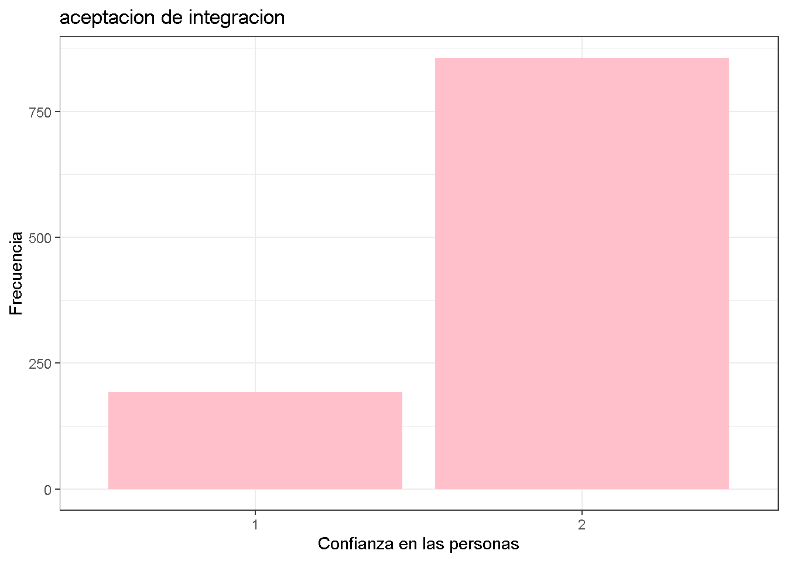

rm(list=ls())
options(scipen=999)Diversidad social (cohesion y segregracion)
Sociedad mixta
Pondremos énfasis en la diversidad social a nivel socio-cultural, como esta llega afectar a una sociedad determinada y sobre todo las complicaciones que se generan a la hora de interactuar e intregrarse socialmente, ya sea a nivel individual, intersubjetivo o social; estos comportamientos afectarían directamente a la cohesión y/o segregación social.
Las condiciones étnica-económica diversas en barrios mixtos son otra forma de generar conflictos internos que pueden llegar a afectar los sentimientos de pertenencia, ya sea al lugar de residencia y/o hacía los vecinos que lo habitan, así mismo, se desarrolla nuevas identidades que estigmatizan a las distintas familias, aunque aumenta las relaciones y disponibilidad de integración social entre individuos.
Para esto utilizaremos los datos abtraidos de la base de datos “Latinobarometro, cuestionario 2023”, la cual maneja e investiga el desarrollo de la democracia, la economía y la sociedad en su conjunto, por medio de un estudio de opinión pública que aplica anualmente alrededor de 18 países de América Latina representando a más de 600 millones de habitantes; producen y publican los resultados, permitiendo ser utilizados en estudios como este. Por medio de esta obtendremos las variables relevantes para el estudio de “Diversidad social (cohesion y segregacion)”: Centrandose en la manera de pensar y opiniones respecto a la sociedad en la que se encuentra, los lazos de confianza que se genera con las personas de la misma nacionalidad o extranjero, teniendo en concideracion el grado de acuerdo respecto a inmigrantes, y por utlimo, agregamos grado de acuerdo respecto a diversidad sexual, como una forma de ver la inclusion social.
Analizar los procesos de diferenciación de las clases sociales en el espacio en el que se mueve, así como la ruptura de las relaciones entre los grupos de diferente nivel socioeconómico, nos entrega información y guía de los comportamientos que transforman la persepción hacía el otro, lo que afectaria la interracción misma. Por lo tanto, la educación sería uno de los muchos factores claves del desarrollo de las personas, ya qué en el lugar en el qué se desarrolló educacionalmente otorga información sobre su nivel socioeconómico, por ende, la baja o mala formación escolar tiene una estrecha relación con la pobreza estructural y segregación social.
Ajustes iniciales
#Cargar base de datos
load("C:/Users/Javi/Desktop/practico 4/input (Bases)/Latinobarometro_2023_Esp_Rdata_v1_0.rdata")names(Latinobarometro_2023_Esp_v1_0) [1] "numinves" "idenpa" "numentre" "reg" "ciudad"
[6] "tamciud" "comdist" "edad" "sexo" "codigo"
[11] "diareal" "mesreal" "ini" "fin" "dura"
[16] "totrevi" "totcuot" "totrech" "totperd" "numcasa"
[21] "codsuper" "supervvi" "superven" "codif" "digit"
[26] "P1ST" "P2ST" "P3N" "P4STGBS" "P5STGBS"
[31] "P6STGBS" "P7ST" "P8STGBS" "P9STGBS" "P10STGBS"
[36] "P11STGBS.A" "P11STGBS.B" "P12ST" "P13STGBS.A" "P13STGBS.B"
[41] "P13ST.C" "P13ST.D" "P13ST.E" "P13ST.F" "P13ST.G"
[46] "P13ST.H" "P13ST.I" "P14ST.A" "P14ST.B" "P14ST.C"
[51] "P14ST.D" "P14ST.E" "P14ST.F" "P14ST.G" "P14ST.H"
[56] "P14N.I" "P15STGBS" "P16ST" "P17ST" "P18ST.A"
[61] "P18STM.B" "P18STM.C" "P18N.D" "P18N.E" "P18N.F"
[66] "P18N.G" "P18N.H" "P18ST.I" "P19N" "P20STM"
[71] "P21ST" "P22ST" "P23ST.A" "P23ST.B" "P23ST.C"
[76] "P23ST.D" "P23ST.E" "P23ST.F" "P24ST.A" "P24ST.B"
[81] "P24ST.C" "P24ST.D" "P24ST.E" "P25N.A" "P25N.B"
[86] "P25N.C" "P26SDN.A" "P26SDN.B" "P26SDN.C" "P26SDN.D"
[91] "P26SDN.E" "P26SDN.F" "P27SDN" "P28STIN" "P29STIN.A"
[96] "P29STIN.B" "P30STIN.A" "P30INN.B" "P30INN.C" "P30INN.D"
[101] "P30INN.E" "P30INN.F" "P31INN.A" "P31INN.B" "P31INN.C"
[106] "P31INN.D" "P31INN.E" "P31INN.F" "P31INN.1" "P31INN.2"
[111] "P31INN.3" "P31INN.4" "P31INN.5" "P31INN.6" "P32INN"
[116] "P33N.A" "P33ST.B" "P33N.C" "P33N.D" "P34WVSNA"
[121] "P34WVSNB" "P35NA" "P35NB" "P36ST" "P37CSN.A"
[126] "P37CSN.B" "P37STCS.C" "P37WVSSTCS.D" "P37STCS.E" "P37CSN.F"
[131] "P37WVSCS.G" "P37WVSCS.H" "P38CSN.A" "P38CSN.B" "P38CSN.C"
[136] "P38CSN.D" "P38CSN.E" "P38CSN.F" "P38CSN.G" "P39N"
[141] "P40STGBS" "P41ST.A" "P41ST.B" "P41ST.C" "P41ST.D"
[146] "P41ST.E" "P41ST.F" "P41ST.G" "P41ST.H" "P41ST.I"
[151] "P41ST.J" "P41ST.K" "P41ST.L" "P41ST.M" "P42STGBS"
[156] "P43STGBS.A" "P43STGBS.B" "P44ST.A" "P44ST.B" "P44ST.C"
[161] "P44ST.D" "P45ST.A" "P45S.B" "P45ST.C" "P45STN.D"
[166] "P46N" "P47ST" "P48ST" "P49ST" "P50ST"
[171] "P51N" "P52N" "P53N.A" "P53N.B" "P53N.C"
[176] "P53N.D" "P54N.A" "P54ST.B" "P55N" "P56N.A"
[181] "P56N.B" "P56N.C" "P56N.D" "P57ST.A" "P57ST.B"
[186] "P57ST.C" "P57ST.D" "P57ST.E" "P57ST.F" "P57ST.G"
[191] "P57ST.H" "P58ST" "P59ST" "P60ST" "P61ST"
[196] "P62N.1" "P62ST.2" "P62ST.3" "P62ST.4" "P62ST.5"
[201] "P62N.6" "P62ST.7" "P62ST.8" "P62N.9" "P62ST.10"
[206] "P62ST.11" "P62N.12" "P62N.13" "P62N.14" "P62N.15"
[211] "P62N.16" "P62N.17" "P63ST" "S1" "S1A"
[216] "S2" "S3" "S4" "S5" "S6"
[221] "S7" "S8" "S9" "S10" "S11"
[226] "S12" "S13INN.A.A" "S13INN.A.B" "S13INN.A.C" "S13INN.A.D"
[231] "S13INN.A.1" "S13INN.A.2" "S13INN.A.3" "S14M.A" "S14M.B"
[236] "S14M.C" "S14M.D" "S14M.E" "S14M.F" "S14M.G"
[241] "S14M.H" "S14M.I" "S14M.J" "S15.A" "S15.B"
[246] "S16" "S17" "S18.A" "S18.B" "S19"
[251] "S20.A" "S20.B" "S20.C" "S20.D" "S20.E"
[256] "S20.F" "S20.G" "S20.H" "S20.I" "S20.J"
[261] "S20.K" "S21A" "S21B" "S22.A" "S22.B"
[266] "S23" "S24" "REEEDUC.1" "REEDUC.2" "REEDUC.3"
[271] "reedad" "perpart" "fampart" "wt" dim(Latinobarometro_2023_Esp_v1_0)[1] 19205 274#Paquetes
#install.packages("librería")
library(pacman)
pacman::p_load(haven,
sjlabelled,
dplyr, #Manipulacion de datos
stargazer, #Tablas
sjmisc, # Tablas
summarytools, # Tablas
kableExtra, #Tablas
sjPlot, #Tablas y gráficos
corrplot, # Correlaciones
sessioninfo, # Información de la sesión de trabajo
ggplot2) # Para la mayoría de los gráficos
find_var(data = Latinobarometro_2023_Esp_v1_0,"idenpa") col.nr var.name var.label
1 2 idenpa idenpaCrear proc_data con variables de interes
proc_data <- Latinobarometro_2023_Esp_v1_0 %>% select(sexo, # sexo
edad, # edad
idenpa, #país
P19N, #manera de pensar respecto a la sociedad
P3N, #opiniones sobre la sociedad en la que vivimos
P9STGBS, #confianza en las personas
P32INN, #llegada de inmigrantes lo beneficia o perjudica
P33N.D, #grado de acuerdo respecto a inmigrantes
P33N.C, #grado de acuerdo: inmigrantes aumentan elcrimen
P37CSN.B) #grado de acuerdo respecto al matriminio entre personas del mismo sexo
#Comprobar
names(proc_data) [1] "sexo" "edad" "idenpa" "P19N" "P3N" "P9STGBS"
[7] "P32INN" "P33N.D" "P33N.C" "P37CSN.B"#Filtrar para usar solo los datos de Chile
proc_data <- proc_data %>% dplyr::filter(idenpa==152)#variables
frq(proc_data$sexo) #Sin NAx <integer>
# total N=1200 valid N=1200 mean=1.53 sd=0.50
Value | N | Raw % | Valid % | Cum. %
--------------------------------------
1 | 563 | 46.92 | 46.92 | 46.92
2 | 637 | 53.08 | 53.08 | 100.00
<NA> | 0 | 0.00 | <NA> | <NA>frq(proc_data$edad) #Sin NAx <integer>
# total N=1200 valid N=1200 mean=44.63 sd=16.63
Value | N | Raw % | Valid % | Cum. %
-------------------------------------
18 | 35 | 2.92 | 2.92 | 2.92
19 | 24 | 2.00 | 2.00 | 4.92
20 | 27 | 2.25 | 2.25 | 7.17
21 | 20 | 1.67 | 1.67 | 8.83
22 | 18 | 1.50 | 1.50 | 10.33
23 | 22 | 1.83 | 1.83 | 12.17
24 | 23 | 1.92 | 1.92 | 14.08
25 | 21 | 1.75 | 1.75 | 15.83
26 | 21 | 1.75 | 1.75 | 17.58
27 | 16 | 1.33 | 1.33 | 18.92
28 | 15 | 1.25 | 1.25 | 20.17
29 | 23 | 1.92 | 1.92 | 22.08
30 | 30 | 2.50 | 2.50 | 24.58
31 | 29 | 2.42 | 2.42 | 27.00
32 | 21 | 1.75 | 1.75 | 28.75
33 | 15 | 1.25 | 1.25 | 30.00
34 | 18 | 1.50 | 1.50 | 31.50
35 | 22 | 1.83 | 1.83 | 33.33
36 | 12 | 1.00 | 1.00 | 34.33
37 | 34 | 2.83 | 2.83 | 37.17
38 | 33 | 2.75 | 2.75 | 39.92
39 | 23 | 1.92 | 1.92 | 41.83
40 | 22 | 1.83 | 1.83 | 43.67
41 | 28 | 2.33 | 2.33 | 46.00
42 | 22 | 1.83 | 1.83 | 47.83
43 | 19 | 1.58 | 1.58 | 49.42
44 | 18 | 1.50 | 1.50 | 50.92
45 | 27 | 2.25 | 2.25 | 53.17
46 | 17 | 1.42 | 1.42 | 54.58
47 | 24 | 2.00 | 2.00 | 56.58
48 | 27 | 2.25 | 2.25 | 58.83
49 | 24 | 2.00 | 2.00 | 60.83
50 | 27 | 2.25 | 2.25 | 63.08
51 | 31 | 2.58 | 2.58 | 65.67
52 | 20 | 1.67 | 1.67 | 67.33
53 | 14 | 1.17 | 1.17 | 68.50
54 | 12 | 1.00 | 1.00 | 69.50
55 | 28 | 2.33 | 2.33 | 71.83
56 | 23 | 1.92 | 1.92 | 73.75
57 | 17 | 1.42 | 1.42 | 75.17
58 | 19 | 1.58 | 1.58 | 76.75
59 | 18 | 1.50 | 1.50 | 78.25
60 | 32 | 2.67 | 2.67 | 80.92
61 | 11 | 0.92 | 0.92 | 81.83
62 | 11 | 0.92 | 0.92 | 82.75
63 | 15 | 1.25 | 1.25 | 84.00
64 | 15 | 1.25 | 1.25 | 85.25
65 | 13 | 1.08 | 1.08 | 86.33
66 | 9 | 0.75 | 0.75 | 87.08
67 | 26 | 2.17 | 2.17 | 89.25
68 | 15 | 1.25 | 1.25 | 90.50
69 | 17 | 1.42 | 1.42 | 91.92
70 | 25 | 2.08 | 2.08 | 94.00
71 | 7 | 0.58 | 0.58 | 94.58
72 | 5 | 0.42 | 0.42 | 95.00
73 | 12 | 1.00 | 1.00 | 96.00
74 | 4 | 0.33 | 0.33 | 96.33
75 | 6 | 0.50 | 0.50 | 96.83
76 | 7 | 0.58 | 0.58 | 97.42
77 | 5 | 0.42 | 0.42 | 97.83
78 | 7 | 0.58 | 0.58 | 98.42
79 | 5 | 0.42 | 0.42 | 98.83
80 | 2 | 0.17 | 0.17 | 99.00
81 | 4 | 0.33 | 0.33 | 99.33
82 | 3 | 0.25 | 0.25 | 99.58
83 | 2 | 0.17 | 0.17 | 99.75
84 | 1 | 0.08 | 0.08 | 99.83
85 | 1 | 0.08 | 0.08 | 99.92
92 | 1 | 0.08 | 0.08 | 100.00
<NA> | 0 | 0.00 | <NA> | <NA>frq(proc_data$idenpa) #Sin NAx <integer>
# total N=1200 valid N=1200 mean=152.00 sd=0.00
Value | N | Raw % | Valid % | Cum. %
---------------------------------------
152 | 1200 | 100 | 100 | 100
<NA> | 0 | 0 | <NA> | <NA>frq(proc_data$P19N)x <integer>
# total N=1200 valid N=1200 mean=1.30 sd=1.09
Value | N | Raw % | Valid % | Cum. %
--------------------------------------
-5 | 28 | 2.33 | 2.33 | 2.33
1 | 640 | 53.33 | 53.33 | 55.67
2 | 532 | 44.33 | 44.33 | 100.00
<NA> | 0 | 0.00 | <NA> | <NA>frq(proc_data$P3N)x <integer>
# total N=1200 valid N=1200 mean=2.82 sd=0.76
Value | N | Raw % | Valid % | Cum. %
--------------------------------------
-2 | 1 | 0.08 | 0.08 | 0.08
-1 | 5 | 0.42 | 0.42 | 0.50
1 | 17 | 1.42 | 1.42 | 1.92
2 | 359 | 29.92 | 29.92 | 31.83
3 | 616 | 51.33 | 51.33 | 83.17
4 | 202 | 16.83 | 16.83 | 100.00
<NA> | 0 | 0.00 | <NA> | <NA>frq(proc_data$P9STGBS)x <integer>
# total N=1200 valid N=1200 mean=1.69 sd=1.01
Value | N | Raw % | Valid % | Cum. %
--------------------------------------
-5 | 23 | 1.92 | 1.92 | 1.92
1 | 212 | 17.67 | 17.67 | 19.58
2 | 965 | 80.42 | 80.42 | 100.00
<NA> | 0 | 0.00 | <NA> | <NA>proc_data$P9STGBS<-as.factor(proc_data$P9STGBS)
frq(proc_data$P32INN)x <integer>
# total N=1200 valid N=1200 mean=2.15 sd=0.80
Value | N | Raw % | Valid % | Cum. %
--------------------------------------
-5 | 6 | 0.50 | 0.50 | 0.50
1 | 135 | 11.25 | 11.25 | 11.75
2 | 698 | 58.17 | 58.17 | 69.92
3 | 361 | 30.08 | 30.08 | 100.00
<NA> | 0 | 0.00 | <NA> | <NA>frq(proc_data$P33N.D)x <integer>
# total N=1200 valid N=1200 mean=2.44 sd=1.77
Value | N | Raw % | Valid % | Cum. %
--------------------------------------
-5 | 50 | 4.17 | 4.17 | 4.17
1 | 67 | 5.58 | 5.58 | 9.75
2 | 403 | 33.58 | 33.58 | 43.33
3 | 421 | 35.08 | 35.08 | 78.42
4 | 259 | 21.58 | 21.58 | 100.00
<NA> | 0 | 0.00 | <NA> | <NA>frq(proc_data$P33N.C)x <integer>
# total N=1200 valid N=1200 mean=1.56 sd=1.30
Value | N | Raw % | Valid % | Cum. %
--------------------------------------
-5 | 32 | 2.67 | 2.67 | 2.67
1 | 470 | 39.17 | 39.17 | 41.83
2 | 554 | 46.17 | 46.17 | 88.00
3 | 118 | 9.83 | 9.83 | 97.83
4 | 26 | 2.17 | 2.17 | 100.00
<NA> | 0 | 0.00 | <NA> | <NA>frq(proc_data$P37CSN.B)x <integer>
# total N=1200 valid N=1200 mean=1.89 sd=1.67
Value | N | Raw % | Valid % | Cum. %
--------------------------------------
-5 | 49 | 4.08 | 4.08 | 4.08
1 | 258 | 21.50 | 21.50 | 25.58
2 | 550 | 45.83 | 45.83 | 71.42
3 | 220 | 18.33 | 18.33 | 89.75
4 | 123 | 10.25 | 10.25 | 100.00
<NA> | 0 | 0.00 | <NA> | <NA>#TRATAMOS CASOS PERDIDOS CON SUM.ISNA
sum(is.na(proc_data))[1] 0#Quitar los NA de la variable P19N
proc_data$P19N <- car::recode(proc_data$P19N, "c(-5)=NA")
#Quitar los NA de la variable P3N
proc_data$P3N <- car::recode(proc_data$P3N, "c(-2,-1)=NA")
#Quitar los NA de la variable P9STGBS
proc_data$P9STGBS <- car::recode(proc_data$P9STGBS, "c(-5)=NA")
#Quitar los NA de la variable P32INN
proc_data$P32INN <- car::recode(proc_data$P32INN, "c(-5)=NA")
#Quitar los NA de la variable P33N.D
proc_data$P33N.D <- car::recode(proc_data$P33N.D, "c(-5)=NA")
#Quitar los NA de la variable P33N.C
proc_data$P33N.C <- car::recode(proc_data$P33N.C, "c(-5)=NA")
#Quitar los NA de la variable P37CSN.B
proc_data$P37CSN.B <- car::recode(proc_data$P37CSN.B, "c(-5)=NA")
#una de dos
#proc_data <- proc_data %>% set_na(., na = c(-2, -1, -5))#Etiquetar las variables
proc_data <- proc_data %>% rename("pen_socl"=P19N, #manera de pensar respecto a la sociedad
"opin_soc"=P3N, #opiniones sobre la sociedad políticos
"conf_soc"=P9STGBS, #confianza en las personas
"grado_inmi"=P32INN, #llegada de inmigrantes perjudica o beneficia
"acuer_inmi"=P33N.D, #grado de acuerdo respecto a inmigrantes
"crim_inmi"=P33N.C,#inmigrantes aumenten el crimen
"grado_sexo"=P37CSN.B) #matrimonio de igual sexo
#Comprobar
names(proc_data) [1] "sexo" "edad" "idenpa" "pen_socl" "opin_soc"
[6] "conf_soc" "grado_inmi" "acuer_inmi" "crim_inmi" "grado_sexo"#Re-etiquetar valores de variables
proc_data$sexo <- set_labels(proc_data$sexo,
labels=c( "Hombre"=1,
"Mujer"=2))
proc_data$pen_socl <- set_labels(proc_data$pen_socl,
labels=c( "sociedad que defienda costumbres"=1,
"sociedad abierta a la diversidad"=2))
proc_data$opin_soc <- set_labels(proc_data$opin_soc,
labels=c( "está bien como está"=1,
"puede mejorarse con pequeños cambios"=2,
"necesitas reformas profundas"=3,
"debe cambiarse radicalmente"=4))
proc_data$conf_soc <- set_labels(proc_data$conf_soc,
labels=c( "se puede confiar en la mayoria de personas"=1,
"uno nunca es lo suficientemente cuidadoso en el trato con los demas"=2))
proc_data$grado_inmi <- set_labels(proc_data$grado_inmi,
labels=c( "lo perjudica"=2,
"lo beneficia"=1,
"ni lo beneficia, ni lo perjudica"=3))
proc_data$acuer_inmi <- set_labels(proc_data$acuer_inmi,
labels=c( "muy de acuerdo"=1,
"de acuerdo"=2,
"en desacuerdo"=3,
"muy en desacuerdo"=4))
proc_data$crim_inmi <- set_labels(proc_data$crim_inmi,
labels=c( "muy de acuerdo"=1,
"de acuerdo"=2,
"en desacuerdo"=3,
"muy en desacuerdo"=4))
proc_data$grado_sexo <- set_labels(proc_data$grado_sexo,
labels=c( "muy de acuerdo"=1,
"de acuerdo"=2,
"en desacuerdo"=3,
"muy en desacuerdo"=4))#Agrupar edades
proc_data <- proc_data %>%
mutate(edad_groups = case_when(edad >=18 & edad<=25 ~ "Adulto Joven",
edad >=26 & edad<=59 ~ "Adulto",
edad >=60 ~ "Adulto mayor"))Asegurarse de quitar los NA
##Primero guardar la base original
proc_data_madre <-proc_data
dim(proc_data)[1] 1200 11#Contar los casos perdidos
sum(is.na(proc_data))[1] 194#Borrar los casos perdidos
proc_data <-na.omit(proc_data)
#Asegurarse
dim(proc_data)[1] 1049 11#Recuperar las etiquetas anteriores
proc_data <-sjlabelled::copy_labels(proc_data,proc_data_madre)##VISUALIZACION DE DATOS:
#Paso previo para realizar tablas
proc_data <-as.data.frame(proc_data)
stargazer(proc_data, type="text")
=========================================
Statistic N Mean St. Dev. Min Max
-----------------------------------------
sexo 1,049 1.534 0.499 1 2
edad 1,049 44.555 16.468 18 92
idenpa 1,049 152.000 0.000 152 152
pen_socl 1,049 1.465 0.499 1 2
opin_soc 1,049 2.837 0.708 1 4
grado_inmi 1,049 2.165 0.607 1 3
acuer_inmi 1,049 2.753 0.872 1 4
crim_inmi 1,049 1.735 0.729 1 4
grado_sexo 1,049 2.186 0.898 1 4
-----------------------------------------#Tabla descriptiva de las variables
sjmisc::descr(proc_data,
show = c("label","range", "mean", "sd", "NA.prc", "n"))%>%
kable(.,"markdown")| var | label | n | NA.prc | mean | sd | range | |
|---|---|---|---|---|---|---|---|
| 10 | sexo | sexo | 1049 | 0 | 1.533842 | 0.4990914 | 1 (1-2) |
| 4 | edad | edad | 1049 | 0 | 44.554814 | 16.4682524 | 74 (18-92) |
| 7 | idenpa | idenpa | 1049 | 0 | 152.000000 | 0.0000000 | 0 (152-152) |
| 9 | pen_socl | pen_socl | 1049 | 0 | 1.465205 | 0.4990258 | 1 (1-2) |
| 8 | opin_soc | opin_soc | 1049 | 0 | 2.836988 | 0.7078654 | 3 (1-4) |
| 2 | conf_soc | conf_soc | 1049 | 0 | 1.816968 | 0.3868768 | 1 (1-2) |
| 5 | grado_inmi | grado_inmi | 1049 | 0 | 2.164919 | 0.6072628 | 2 (1-3) |
| 1 | acuer_inmi | acuer_inmi | 1049 | 0 | 2.753098 | 0.8720930 | 3 (1-4) |
| 3 | crim_inmi | crim_inmi | 1049 | 0 | 1.734986 | 0.7285914 | 3 (1-4) |
| 6 | grado_sexo | grado_sexo | 1049 | 0 | 2.185891 | 0.8978086 | 3 (1-4) |
###Crear tabla sobre la manera de pensar respecto a la sociedad y confianza hacia las personas
sjt.xtab(proc_data$pen_socl, proc_data$conf_soc, encoding = "UTF-8")| pen_socl | conf_soc | Total | |
|---|---|---|---|
| se puede confiar en la mayoria de personas |
uno nunca es lo suficientemente cuidadoso en el trato con los demas |
||
| sociedad que defienda costumbres |
94 | 467 | 561 |
| sociedad abierta a la diversidad |
98 | 390 | 488 |
| Total | 192 | 857 | 1049 |
| χ2=1.715 · df=1 · φ=0.043 · p=0.190 | |||
#Agregar porcentaje
sjt.xtab(proc_data$pen_socl, proc_data$conf_soc,
show.col.prc=TRUE,
show.summary=FALSE,
encoding = "UTF-8")| pen_socl | conf_soc | Total | |
|---|---|---|---|
| se puede confiar en la mayoria de personas |
uno nunca es lo suficientemente cuidadoso en el trato con los demas |
||
| sociedad que defienda costumbres |
94 49 % |
467 54.5 % |
561 53.5 % |
| sociedad abierta a la diversidad |
98 51 % |
390 45.5 % |
488 46.5 % |
| Total | 192 100 % |
857 100 % |
1049 100 % |
El 49% de las personas coinciden en que se puede confiar en la mayoria de personas y a la vez mantener una sociedad mas tradicional que defienda las costumbres, lo que indicaria que en este caso sería posible mantener cierto lazo de confianza con los demas, sin dejar de lado la tradicionalidad de la nacion, por ende, sin que esta influya en la sociedad, ya sea generando cambios, u otros. Sin embargo un poco mas de la mitad, el 51% coincide en que se puede confiar en la mayoria de las personas, sin importar la etnia, raza, nacionalidad, sexo, etc., aceptando la posibilidad de una sociedad mas abierta a la diversidad, teniendo en concideracion todo lo que esta implicaría.
Mas de la mitad, un 54.5% opina que uno nunca sería lo suficientemente cuidadoso en el trato con los demas. Indica la importancia de generar lazos de confianza con miembros de la ciudadania, teniendo en consideracion la forma en que uno trata al otro. Esta reciprocidad sería esencial para mantener una buena convivencia social.
#Tabla descriptiva con summarys
summarytools::dfSummary(proc_data, plain.ascii = FALSE)### Data Frame Summary
#### proc_data
**Dimensions:** 1049 x 11
**Duplicates:** 30
----------------------------------------------------------------------------------------------------------------
No Variable Stats / Values Freqs (% of Valid) Graph Valid Missing
---- -------------- -------------------------- --------------------- ---------------------- ---------- ---------
1 sexo\ Min : 1\ 1 : 489 (46.6%)\ IIIIIIIII \ 1049\ 0\
[integer] Mean : 1.5\ 2 : 560 (53.4%) IIIIIIIIII (100.0%) (0.0%)
Max : 2
2 edad\ Mean (sd) : 44.6 (16.5)\ 69 distinct values : \ \ : \ \ :\ 1049\ 0\
[integer] min < med < max:\ : : : : : .\ (100.0%) (0.0%)
18 < 44 < 92\ : : : : : : :\
IQR (CV) : 26 (0.4) : : : : : : : :\
: : : : : : : : .
3 idenpa\ 1 distinct value 152 : 1049 (100.0%) IIIIIIIIIIIIIIIIIIII 1049\ 0\
[integer] (100.0%) (0.0%)
4 pen_socl\ Min : 1\ 1 : 561 (53.5%)\ IIIIIIIIII \ 1049\ 0\
[integer] Mean : 1.5\ 2 : 488 (46.5%) IIIIIIIII (100.0%) (0.0%)
Max : 2
5 opin_soc\ Mean (sd) : 2.8 (0.7)\ 1 : 15 ( 1.4%)\ \ 1049\ 0\
[integer] min < med < max:\ 2 : 317 (30.2%)\ IIIIII \ (100.0%) (0.0%)
1 < 3 < 4\ 3 : 541 (51.6%)\ IIIIIIIIII \
IQR (CV) : 1 (0.2) 4 : 176 (16.8%) III
6 conf_soc\ 1\. 1\ 192 (18.3%)\ III \ 1049\ 0\
[factor] 2\. 2 857 (81.7%) IIIIIIIIIIIIIIII (100.0%) (0.0%)
7 grado_inmi\ Mean (sd) : 2.2 (0.6)\ 1 : 121 (11.5%)\ II \ 1049\ 0\
[integer] min < med < max:\ 2 : 634 (60.4%)\ IIIIIIIIIIII \ (100.0%) (0.0%)
1 < 2 < 3\ 3 : 294 (28.0%) IIIII
IQR (CV) : 1 (0.3)
8 acuer_inmi\ Mean (sd) : 2.8 (0.9)\ 1 : 63 ( 6.0%)\ I \ 1049\ 0\
[integer] min < med < max:\ 2 : 371 (35.4%)\ IIIIIII \ (100.0%) (0.0%)
1 < 3 < 4\ 3 : 377 (35.9%)\ IIIIIII \
IQR (CV) : 1 (0.3) 4 : 238 (22.7%) IIII
9 crim_inmi\ Mean (sd) : 1.7 (0.7)\ 1 : 432 (41.2%)\ IIIIIIII \ 1049\ 0\
[integer] min < med < max:\ 2 : 485 (46.2%)\ IIIIIIIII \ (100.0%) (0.0%)
1 < 2 < 4\ 3 : 110 (10.5%)\ II \
IQR (CV) : 1 (0.4) 4 : 22 ( 2.1%)
10 grado_sexo\ Mean (sd) : 2.2 (0.9)\ 1 : 231 (22.0%)\ IIII \ 1049\ 0\
[integer] min < med < max:\ 2 : 504 (48.0%)\ IIIIIIIII \ (100.0%) (0.0%)
1 < 2 < 4\ 3 : 202 (19.3%)\ III \
IQR (CV) : 1 (0.4) 4 : 112 (10.7%) II
11 edad_groups\ 1\. Adulto\ 670 (63.9%)\ IIIIIIIIIIII \ 1049\ 0\
[character] 2\. Adulto Joven\ 158 (15.1%)\ III \ (100.0%) (0.0%)
3\. Adulto mayor 221 (21.1%) IIII
----------------------------------------------------------------------------------------------------------------#Mejor visualiazción
view(dfSummary(proc_data, headings=FALSE))Switching method to 'browser'Output file written: C:\Users\Javi\AppData\Local\Temp\RtmpGC7HtT\file49c5d6e690c.html#Crear gráficos usando ggplot2
graph1 <- proc_data %>% ggplot(aes(x = conf_soc)) +
geom_bar(fill = "pink")+
labs(title = "aceptacion de integracion",
x = "Confianza en las personas",
y = "Frecuencia") +
theme_bw()
#para llamarlo de nuevo
graph1
#lo guardamos
ggsave(graph1, file="files/img/graph1.png")Saving 7 x 5 in imageA partir de este grafico, se infiere que mas de la mitad, cerca de 800 personas, estarian de acuerdo en la importancia que tiene generar lazos de confianza con los ciudadanos, especialmente con los que uno convive cotidianamente, ya sea, en el ambito laboral, estudiantil, etc., para así mantener una convivencia mas plena, teniedo la posibilidad de una itegracion y diversidad a nivel socio-cultural.
Este estudio nos permite observar como los ciudadanos chilenos tienden a generar lazos de confienza, teniendo en consideracion la dificultad a la hora de tratar con un otro. Generalmente las nuevas generaciones coinciden en la aceptacion de una sociedad cada vez mas diversa, en todo su ambitos.